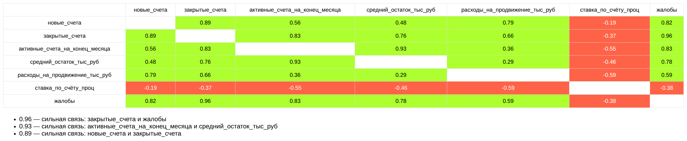
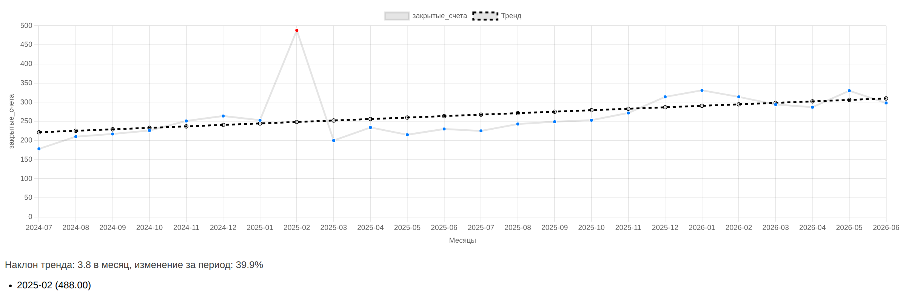

Что такое HTML-файл и почему он открывается на любой рабочей станции; что такое мини-инструмент на его основе; пошаговая инструкция создания — от выгрузки до проверенного результата, со всеми промптами — и правила составления собственного промпта.
.html
открывается двойным щелчком в любом браузере — Chrome, Safari, Edge,
Яндекс.Браузере.Для работы с таким файлом не нужно ничего устанавливать и никуда подключаться: браузер уже есть на каждой рабочей станции. В файл можно встроить и логику — расчёты, фильтры, графики; тогда страница становится небольшим приложением. Важное свойство: страница, открытая из файла, работает локально — выгрузка, которую вы в неё загружаете, обрабатывается на вашем компьютере и никуда не передаётся.
Мини-инструмент — это HTML-файл с одной аналитической операцией внутри: матрица корреляций, динамика с трендом и выбросами, карта разбросов. Ассистент создаёт такой файл по одному промпту. Свойства формата:
инструмент.html — расширение обязательно
.html.Результат работы двух основных мини-инструментов на учебной выгрузке — сверяйте с ним свой запуск:


Сделай одностраничный HTML-инструмент: матрица корреляций по банковской выгрузке. Данные: CSV-файл, кодировка UTF-8 с меткой порядка байтов, разделитель — точка с запятой, десятичный знак — запятая. Первая колонка «месяц» в формате ГГГГ-ММ, дальше текстовые колонки-срезы (регион, канал) и числовые показатели. Пример первых строк: месяц;регион;канал;новые_счета;закрытые_счета;активные_счета_на_конец_месяца;средний_остаток_тыс_руб;расходы_на_продвижение_тыс_руб;ставка_по_счёту_проц;жалобы 2024-07;Центральный;Мобильное приложение;620;110;3930;221,1;515;11,49;13 Названия колонок в коде жёстко не прописывай: числовые определи сам (все непустые значения разбираются в число после замены запятой на точку), текстовые пропусти. Что делает страница: 1. Кнопка выбора CSV-файла; данные читаются в браузере и никуда не отправляются. 2. Свёртка по месяцам — это обязательно: в файле на каждый месяц по многу строк (регионы × каналы). Показатели с «средн», «ставка», «проц» или «доля» в названии усредняются, остальные суммируются. Корреляции считать ТОЛЬКО по свёрнутым месячным строкам, иначе они измеряют различия срезов, а не связь показателей. 3. Матрица корреляций Пирсона по всем числовым показателям: таблица, в ячейке коэффициент с двумя знаками, фон — зелёный для положительных, красный для отрицательных, насыщенность пропорциональна модулю. 4. Под матрицей — список трёх самых сильных пар (по модулю, без диагонали) словами: «0,96 — сильная связь: закрытые_счета и жалобы». 5. Клик по ячейке матрицы строит диаграмму рассеяния этой пары: каждая точка — месяц. Требования к коду: — один HTML-файл; графики — Chart.js версии 4 с CDN: <script src="https://cdn.jsdelivr.net/npm/chart.js@4.4.0/dist/chart.umd.js"></script>; настройки — синтаксис четвёртой версии (plugins.title, scales.x/scales.y); — диаграмма рассеяния в контейнере фиксированной высоты, у графика maintainAspectRatio: false; перед перерисовкой предыдущий график уничтожать через destroy(); — месяц в расчётах — строка, в объект даты не превращать; — имена переменных и функций — английские слова латиницей; русский — только в подписях; — async и await не использовать, разбор файла синхронный; — у первого заголовка CSV срезать метку кодировки: replace(/^/, ""); — корреляция Пирсона: по отклонениям от среднего, при нулевом знаменателе вернуть 0. Проверь себя: коэффициенты лежат между −1 и 1; на этой выгрузке закрытые_счета и жалобы дают около 0,96, новые_счета и расходы_на_продвижение — около 0,79. Если получилось 0,3–0,4 — забыта свёртка по месяцам. Ответ — только полный HTML-файл в тройных кавычках, без пояснений.
Сделай одностраничный HTML-инструмент: динамика показателя с линией тренда и подсветкой выбросов. Данные: CSV-файл, кодировка UTF-8 с меткой порядка байтов, разделитель — точка с запятой, десятичный знак — запятая. Первая колонка «месяц» в формате ГГГГ-ММ, дальше текстовые колонки-срезы и числовые показатели. Пример первых строк: месяц;регион;канал;новые_счета;закрытые_счета;активные_счета_на_конец_месяца;средний_остаток_тыс_руб;расходы_на_продвижение_тыс_руб;ставка_по_счёту_проц;жалобы 2024-07;Центральный;Мобильное приложение;620;110;3930;221,1;515;11,49;13 Названия колонок жёстко не прописывай: числовые определи сам, текстовые считай срезами. Что делает страница: 1. Кнопка выбора CSV-файла; данные читаются в браузере и никуда не отправляются. 2. Три выпадающих списка: показатель; срез («вся выгрузка», регион, канал); значение среза. Любое изменение перерисовывает график. 3. Свёртка по месяцам выбранного среза: показатели с «средн», «ставка», «проц» или «доля» в названии усредняются, остальные суммируются. График всегда строится по месячным итогам, не по строкам файла. 4. Линейный график по месяцам плюс прямая линия тренда по всем точкам (метод наименьших квадратов). Под графиком одной строкой: наклон тренда за месяц и изменение за период в процентах. 5. Выбросы: точки вне границ «первый квартиль минус полтора межквартильных размаха … третий квартиль плюс полтора размаха» рисуются красным и крупнее; под графиком — список таких месяцев со значениями. Требования к коду: — один HTML-файл; график — Chart.js версии 4 с CDN: <script src="https://cdn.jsdelivr.net/npm/chart.js@4.4.0/dist/chart.umd.js"></script>; настройки — синтаксис четвёртой версии; ось X категориальная с подписями месяцев (тип time не использовать); — график в контейнере фиксированной высоты, maintainAspectRatio: false; перед перерисовкой предыдущий график уничтожать через destroy(); — месяц в расчётах — строка, в объект даты не превращать; — квантили считать по отсортированной КОПИИ массива: values.slice().sort((a,b)=>a-b); — имена переменных и функций — английские слова латиницей; русский — только в подписях; — async и await не использовать; у первого заголовка CSV срезать метку кодировки. Проверь себя: при выборе показателя «закрытые_счета», среза «регион» и значения «Южный» на этой выгрузке один месяц должен подсветиться как выброс — закрытий в нём в несколько раз больше соседних. Ответ — только полный HTML-файл в тройных кавычках, без пояснений.
Помощник собирает готовый промпт под вашу выгрузку. Опишите поля таблицы — добавляйте их кнопкой «плюс», меняйте и удаляйте, — выберите операцию из списка или задайте свою; структура и примеры значений подставятся в промпт сами. Каждая заготовка списка прогнана через GigaChat и проверена; рядом с промптами лежат готовые образцы.
1 · Поля выгрузки. Имя, тип и примерное значение каждой колонки:
| Поле | Тип | Пример значения |
|---|
2 · Операция:
3 · Готовый промпт — скопируйте и отправьте GigaChat одним сообщением:
Когда готовые инструменты освоены, следующий шаг — инструмент под свою задачу. Рабочий промпт состоит из пяти разделов; пропуск любого из них приводит к типовой ошибке генерации:
Шаблон-заготовка: скопируйте и заполните места в угловых скобках.
Сделай одностраничный HTML-инструмент: <НАЗВАНИЕ: что инструмент делает одной фразой>. Данные: CSV-файл, кодировка UTF-8 с меткой порядка байтов, разделитель — точка с запятой, десятичный знак — запятая. Первая колонка «месяц» в формате ГГГГ-ММ. Пример первых строк: <ВСТАВИТЬ: заголовок CSV и две первые строки данных> Что делает страница: 1. Кнопка выбора CSV-файла; данные читаются в браузере и никуда не отправляются. 2. <ОПИСАТЬ: какие элементы управления нужны — списки, фильтры, переключатели> 3. <ОПИСАТЬ: какой расчёт выполняется и по каким правилам агрегируются строки> 4. <ОПИСАТЬ: что выводится — таблица, график, список значений> Требования к коду: — один HTML-файл; графики — Chart.js версии 4 с CDN: <script src="https://cdn.jsdelivr.net/npm/chart.js@4.4.0/dist/chart.umd.js"></script>; — месяц в расчётах — строка, в объект даты не превращать; — имена переменных и функций — английские слова латиницей; русский — только в подписях; — async и await не использовать; у первого заголовка CSV срезать метку кодировки. Проверь себя: <ВСТАВИТЬ: одно-два контрольных числа, которые должны получиться на вашей выгрузке>. Ответ — только полный HTML-файл в тройных кавычках, без пояснений.
Полный инструмент — страница анализа со всеми операциями сразу — собирается тем же способом, только промпт длиннее: разбор его устройства и все девять проверок приёмки — в кейсе «Свой инструмент». Формулы методов, которые считают инструменты, — в справочнике «Математические основы».